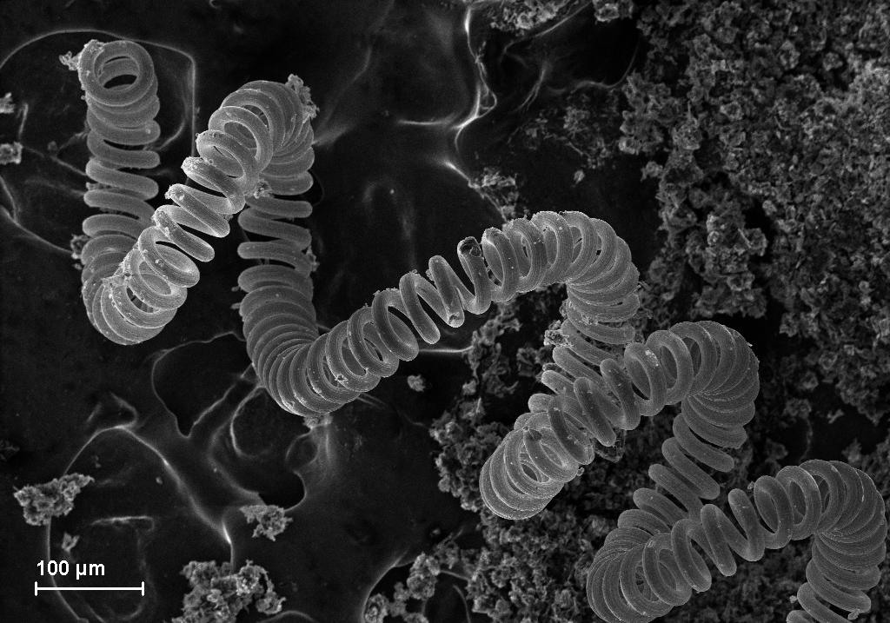
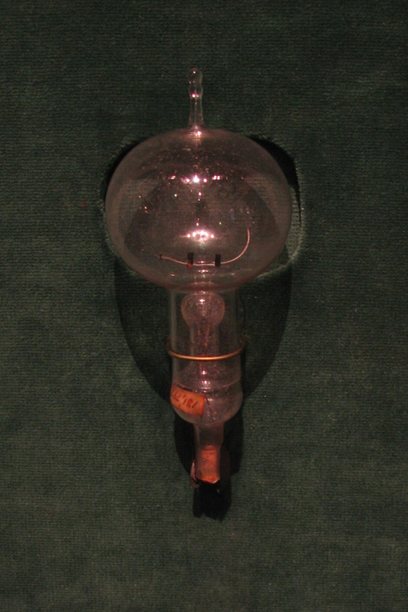

The Incandescent Light Bulb

An incandescent light bulb, incandescent lamp or incandescent light globe is an electric light with a wire filament heated until it glows. The filament is enclosed in a glass bulb with a vacuum or inert gas to protect the filament from oxidation. Current is supplied to the filament by terminals or wires embedded in the glass. A bulb socket provides mechanical support and electrical connections.
Incandescent bulbs are manufactured in a wide range of sizes, light output, and voltage ratings, from 1.5 volts to about 300 volts. They require no external regulating equipment, have low manufacturing costs, and work equally well on either alternating current or direct current. As a result, the incandescent bulb became widely used in household and commercial lighting, for portable lighting such as table lamps, car headlamps, and flashlights, and for decorative and advertising lighting.
Incandescent bulbs are much less efficient than other types of electric lighting, converting less than 5% of the energy they use into visible light. The remaining energy is lost as heat. The luminous efficacy of a typical incandescent bulb for 120 V operation is 16 lumens per watt, compared with 60 lm/W for a compact fluorescent bulb or 150 lm/W for some white LED lamps. Some applications use the heat generated by the filament. Heat lamps are made for uses such as incubators, lava lamps, and the Easy-Bake Oven toy. Quartz tube halogen infrared heaters are used for industrial processes such as paint curing or for space heating.
Incandescent bulbs typically have short lifetimes compared with other types of lighting; around 1,000 hours for home light bulbs versus typically 10,000 hours for compact fluorescents and 20,000–30,000 hours for lighting LEDs. Incandescent bulbs can be replaced by fluorescent lamps, high-intensity discharge lamps, and light-emitting diode lamps (LED). Some areas have implemented phasing out the use of incandescent light bulbs to reduce energy consumption.